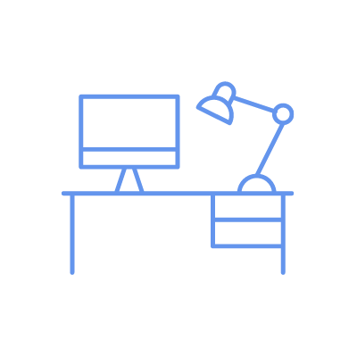

Apoyos Familiares

Generar apoyos directos, talleres y acompañamiento a partir de los encuentros, charlas y jornadas en la comunidad.
Educación media

Analizar las necesidades, inquietudes y potencialidades pedagógicas que presentan los estudiantes con TEA/CEA
Educación universitaria
Construir un manual de Apoyo para brindar estrategias dentro de la vida Universitaria, que permitan el bienestar y el éxito académico de dichos estudiantes.
Apoyos Laborales
Crear viabilidad para la independencia de personas con TEA/CEA en ámbitos laborales, con su debida adecuación para tal fin.